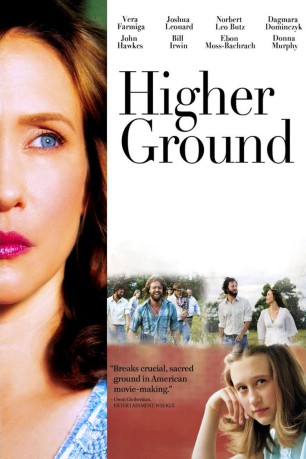

#2664 Higher Ground - Der Ruf nach Gott
Alternativ: Higher Ground
 
 IMDB-Wertung: 6.3 / 10
IMDB-Wertung: 6.3 / 10  Metascore: 74
Metascore: 74 
Corinne (McKenzie Turner/Vera Farmiga) lebt mit ihren Eltern seit ihrer Kindheit in einer religiösen Kommune. Als sie als junge Erwachsene die Liebe kennen lernt und schwanger wird, verlässt sie ihre Gemeinde und schließt sich einer sektenähnlichen Hippie-Kommune an. Doch auch dort findet sie nicht das, was sie sucht. - Beeindruckendes Drama über Selbstzweifel und Selbstfindung, von und mit "Up in the Air"-Star Vera Farmiga.
Jahr: 2011
Dauer: 107 Minuten
FSK:
Land: USA Studio: Sony Pictures ClassicsTonspuren: DD2.0 - ,
Untertitel: Englisch,
Auflösung: 1080p (1920x1040) Größe: 7372 MB
Genre: Drama
Regisseur: Vera Farmiga
Drehbuch: Carolyn S. Briggs, Tim Metcalfe, Carolyn S. Briggs
Soundtrack: Alec Puro
Darsteller:
 Joshua Leonard als Ethan Miller
Joshua Leonard als Ethan Miller Norbert Leo Butz als Pastor Bill
Norbert Leo Butz als Pastor Bill Michael Chernus als Ned
Michael Chernus als Ned Vera Farmiga als Corinne Walker
Vera Farmiga als Corinne Walker Donna Murphy als Kathleen Walker
Donna Murphy als Kathleen Walker John Hawkes als CW Walker
John Hawkes als CW Walker Bill Irwin als Pastor Bud
Bill Irwin als Pastor Bud Taissa Farmiga als Teenage Corinne Walker
Taissa Farmiga als Teenage Corinne Walker Boyd Holbrook als Teenage Ethan Miller
Boyd Holbrook als Teenage Ethan Miller Dagmara Dominczyk als Annika
Dagmara Dominczyk als Annika- Molly Hawkey als Molly
 Ebon Moss-Bachrach als Luke
Ebon Moss-Bachrach als Luke- Reagan Leonard als Hope
- Lucy Owen als Joanne
 Nina Arianda als Wendy
Nina Arianda als Wendy Sean Mahon als Liam Donovan
Sean Mahon als Liam Donovan- Natalie Thomas als Liam's Wife
- Deborah Hedwall als Faye
- Alison Ball als Rebecca - Believer , uncredited
- Ralph Cashen als Soccer coach , uncredited
- P.J. Jentsch als Peter , uncredited
 Laurent Rejto als Gallery Patron , uncredited
Laurent Rejto als Gallery Patron , uncredited- McKenzie Turner als Young Corrine Walker
- Matthew Dubas als Salesman
- Taylor Schwencke als Young Wendy Walker
- Jillian Lindig als Mrs. Tittle
- Alden Rosakranse als Tim
- James Noon als Kirk
- Kaitlyn Rae King als Teenage Wendy Walker
- Brandon Boyer als Mike
- Harrison Basch als Renegade
- Noah Bowman als Renegade
- Booker James Winter als Biology Teacher
- Gene DeWitt als Gene
- Flynn Hawkey als Baby Abigail
- Warren Haynes als Warren
- Luella Roche als Younger Abigail Miller
- Sarah Banks als Younger Lily Miller
- Barbara Blackburn als Deborah
- Joe Leary als Joe
- Frank L. Goodyear als Dr. Frank Barnes
- Charles Glaser als Woody
- Joseph Sinagra als Cop
- Sarah Little als Older Abigail Miller
- Zoë Allegra als Old Lily Miller
- Mathew Biltonen als Gabe Miller
- Sonia T. Gittens als Nurse
- Eli Rubinstein als Seven Year Old Boy
- Amy Helm als Amy
- MacHan Taylor als MacHan
Datei: X:\2011(G-M)\Higher Ground - Der Ruf nach Gott (2011, FSK, 1920x1040).mkv seit 30.11.2015
Festplatte: HD 2011(G-Z)
 Es gibt insgesamt 100 Filme in der Gruppe '2011(G-M)'
Es gibt insgesamt 100 Filme in der Gruppe '2011(G-M)'